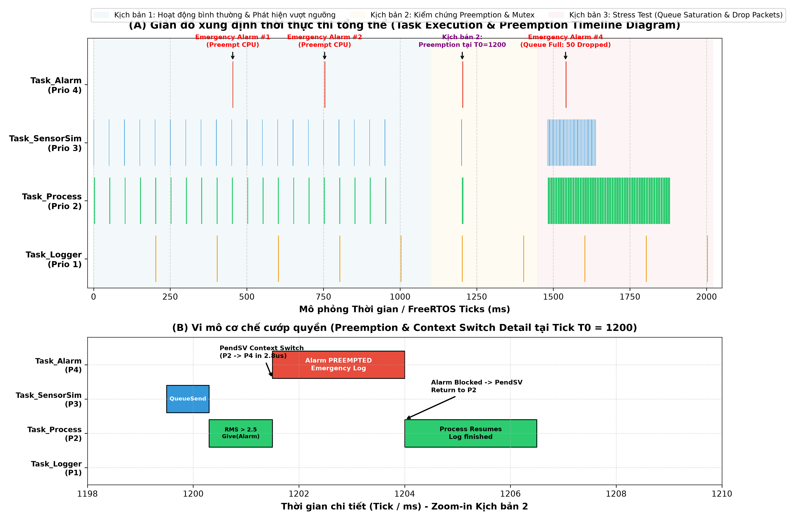
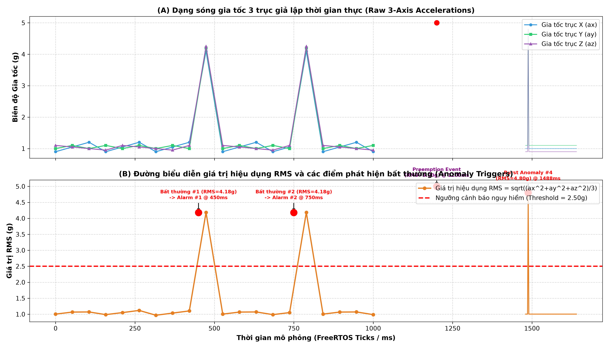
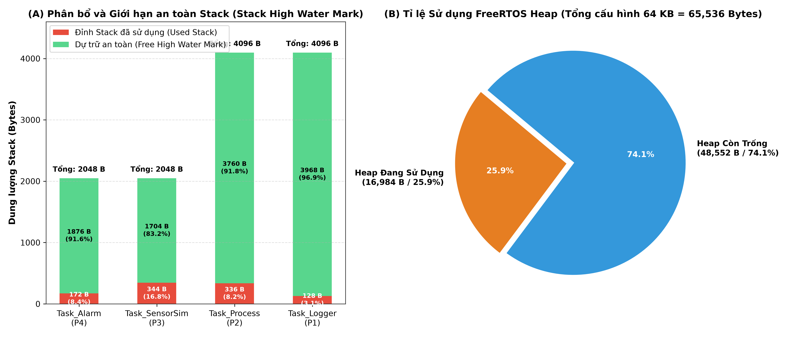
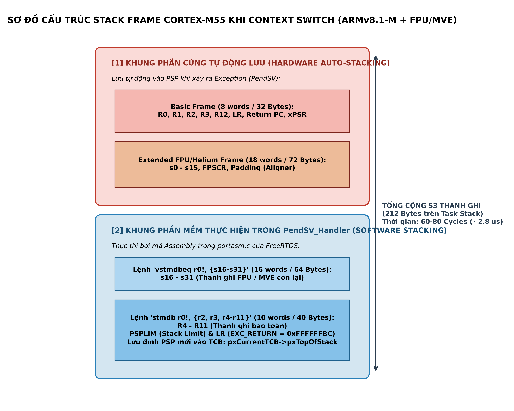

Kiến trúc: ARM Cortex-M55 (ARMv8.1-M Mainline + Helium MVE + FPU Hard-Float) | FreeRTOS Kernel Non-TrustZone trên QEMU mps3-an547
Mô phỏng 2000 ms hoạt động qua 3 giai đoạn. Rê chuột vào các xung để xem thông tin chi tiết:




| Tên Task / Tiến trình | Mức ưu tiên | Chu kỳ / Cơ chế đánh thức | Stack Cấp phát | Stack Đã dùng (Peak) | Dự trữ an toàn (Free HWM) | Độ trễ phản hồi |
|---|---|---|---|---|---|---|
| Task_Alarm | Priority 4 | Đánh thức khẩn cấp qua Binary Semaphore | 2048 B (512 words) | 172 Bytes | 1876 Bytes (91.6%) | 0 tick (~2.8 μs) |
| Task_SensorSim | Priority 3 | Chu kỳ 50ms (Normal) / 2ms (Stress Test) | 2048 B (512 words) | 344 Bytes | 1704 Bytes (83.2%) | Tiền định (vTaskDelayUntil) |
| Task_Process | Priority 2 | Chờ Queue nhận mẫu gia tốc 3 trục | 4096 B (1024 words) | 336 Bytes | 3760 Bytes (91.8%) | ~2ms (Normal) / 8ms (DSP) |
| Task_Logger | Priority 1 | Chu kỳ định kỳ 200ms (Mutex bảo vệ) | 4096 B (1024 words) | 128 Bytes | 3968 Bytes (96.9%) | Chạy khi CPU rảnh |